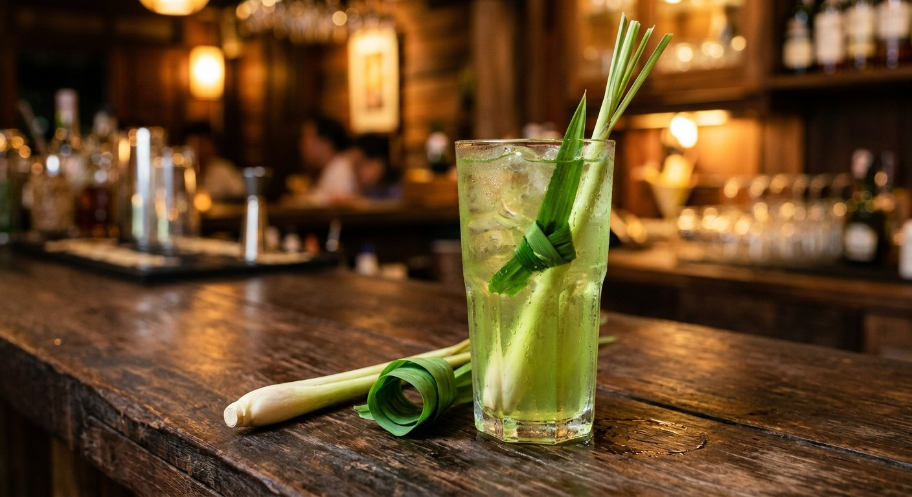

Lemongrass and pandan simmered into a pale green herbal drink, sweetened, iced — the cooler the garden gives away free.

น้ำตะไคร้ is the drink made from the herbs every Thai garden grows and nobody buys — which is exactly Kapook's pitch: lemongrass and pandan, planted and forgotten, turned into the day's best cooler in twenty minutes. The recipe is barely a recipe: boil, sweeten, cool, ice.
The technique has two details worth keeping. The lemongrass gets bruised before it goes in — bashed just enough to crack the stalks so the oils release. And the boil runs until the water changes colour — Kapook's home version reads the drink's readiness by the pale green tint, while TrueID's selling version takes it further: a full thirty-minute simmer on medium-low, the herbs pressed under the water, plus the pinch of salt that every batch recipe keeps and every home recipe forgets.
Then there's the herbal-medicine version. Zomzaa's bottled recipe adds mature ginger to the pot — lemongrass and ginger boiled three minutes, pandan for ten more — the warm, spicy trio sold in 250 ml bottles as the health drink. The base is the same water and herbs; only the heat in the throat changes.
| Thai | English | Amount |
|---|---|---|
| น้ำ | Water | 1 L |
| ใบเตยหั่นชิ้น | Pandan leaves, cut | 5 |
| ตะไคร้ทุบ | Lemongrass, bruised | 3 stalks |
| น้ำตาลทราย | Sugar | 100 g |
| น้ำมะนาว | Lime juice | to taste |
| น้ำแข็ง | Ice | to serve |
The selling batch (TrueID): 5 L water, 10–15 bruised stalks, 20 pandan leaves, 300 g unrefined sugar, ½ tsp salt — 30-minute simmer, 15 bottles. The ginger trio (Zomzaa): 3 L water, 80 g lemongrass, 50 g mature ginger, 10 g pandan, 100 g brown sugar, 1 tsp salt.
Ginger or not. Kapook and TrueID keep it lemongrass-pandan; Zomzaa's bottled version adds mature ginger — the herbal-medicine school, warmer and spicier. The pure version is the refreshment; the ginger version is the remedy.
The simmer. Kapook stops when the colour turns — a short boil. TrueID simmers a full 30 minutes for the selling batch. Zomzaa times it: 3 minutes for ginger and lemongrass, 10 for pandan. Longer = deeper, but also more bitter if the stalks break down.
Salt. TrueID's half teaspoon and Zomzaa's full teaspoon — the batch-brew trick that rounds the sweetness. Kapook's home glass skips it. It's invisible in the drink and noticeable by its absence at scale.
The sweetener. White sugar (Kapook), unrefined (TrueID), brown (Zomzaa). The darker sugars give the drink its amber tint; white keeps it pale green.
Lime or not. Only Kapook adds lime juice at the glass. The bottled versions sell it plain — the lime is the home-drinker's brightener.
This recipe is translated from the following Thai-language sources. Where they disagree, we've said so.
1. Kapook — "น้ำตะไคร้ใบเตย เครื่องดื่มสมุนไพรประโยชน์ล้นแก้ว" (the recipe used here) — cooking.kapook.com
2. TrueID — "สูตรทำน้ำตะไคร้ใบเตย สูตรทำขาย" by แม่ซี (the 15-bottle batch) — food.trueid.net
3. Zomzaa — "วิธีทำน้ำตะไคร้ ขิง ใบเตย (บรรจุขวด ขาย)" (the ginger trio) — zomzaa.com